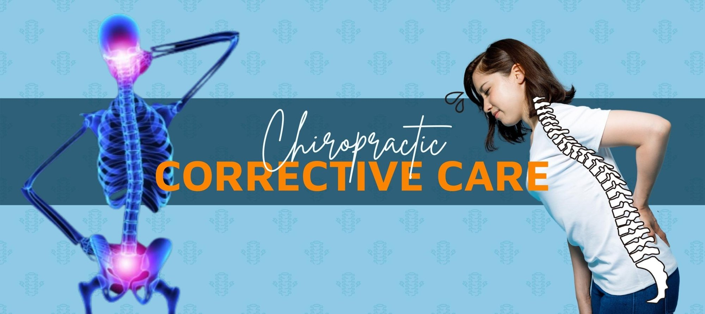
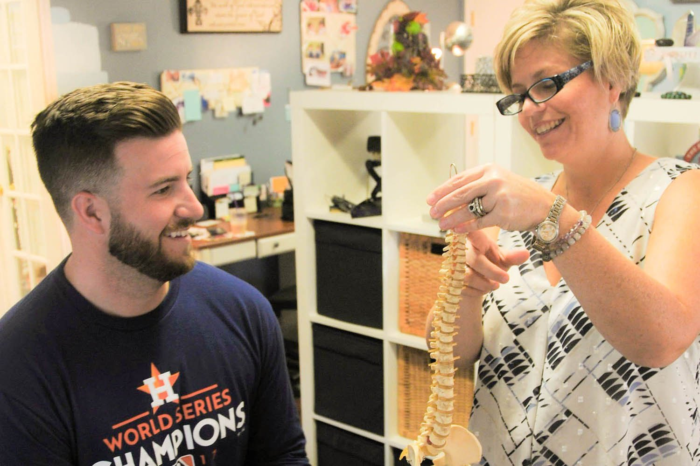
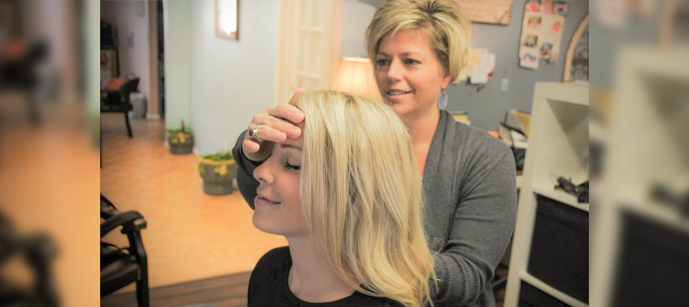
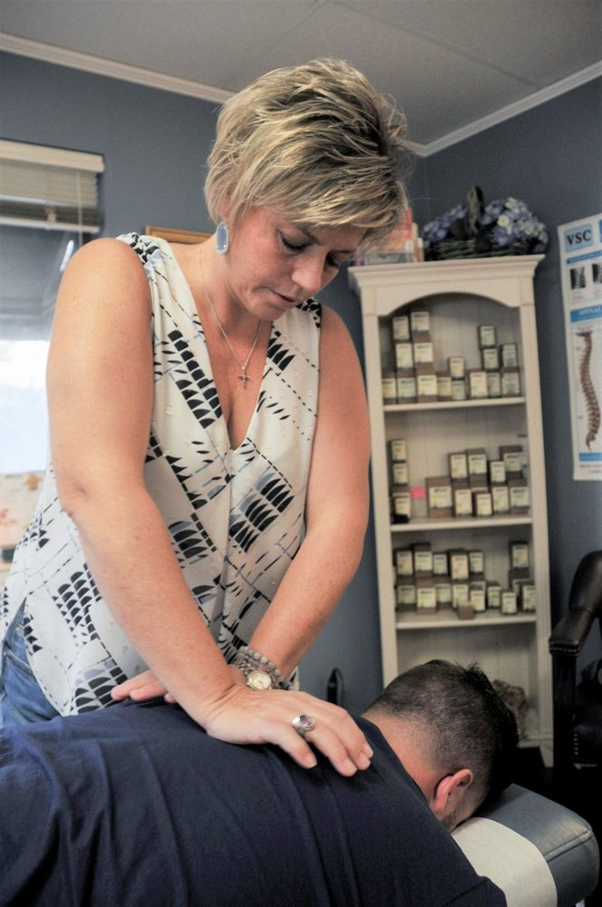
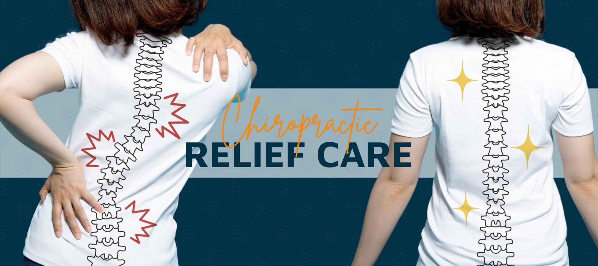
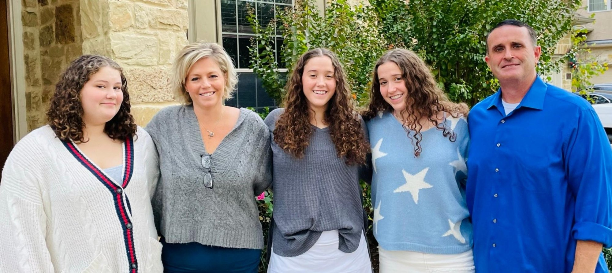

Atlas (C1) Alignment
The atlas, your top vertebra, has a unique relationship with the rest of the spine. Dr. Ramsey pays particular attention to aligning it properly, because it's essential to overall health and spinal function.
Gentle, effective chiropractic care with Dr. Kristin Ramsey. She looks beyond the symptom to the root cause, bringing together precise spinal and atlas alignment, balanced nutrition and emotional well-being so your body can do what it does best: heal itself.



Nothing removed with surgery. Nothing added with drugs. Just your nervous system, working the way it was designed to.
Your brain and spinal cord are the body's control panel, and your nerves are the highway that carries every instruction. When a spinal misalignment compresses, pinches or irritates a nerve, the message can't get through clearly, and your body falls out of balance.
Chiropractic is the art, science and philosophy of detecting and correcting those misalignments. Correct the spine, and the body is free to function at its optimal level again.
Unlike conventional medicine, which alleviates symptoms once they appear, Dr. Ramsey treats the whole person, improving the body's natural ability to heal through proper spinal alignment, balanced nutrition and emotional well-being.
Every adjusting method has its own way of detecting and correcting misalignments. These are the techniques Dr. Ramsey employs most, always applied gently in a relaxed, comfortable atmosphere.
The atlas, your top vertebra, has a unique relationship with the rest of the spine. Dr. Ramsey pays particular attention to aligning it properly, because it's essential to overall health and spinal function.
The traditional manual method: precise, hands-on adjustments that restore spinal alignment and mobility to restricted joints.
A system that addresses the relationship between the pelvis and the skull, supporting balanced function through the whole spine.
A whole-body approach to finding and correcting imbalances, so Dr. Ramsey can address what's really behind your symptoms.
An extensive questionnaire and review of your blood work uncovers nutritional deficiencies, followed by a plan for supplemental support, including Standard Process supplements.
Complementary procedures that enhance the healing efforts of your chiropractic treatment.
Clear guidance on exercises and stretches you can do at home, no special equipment needed, plus simple fixes for the imbalances daily life creates.
The atlas, otherwise known as C1, sits at the very top of your spine and has a unique relationship with everything below it. When it's out of alignment, the effects can ripple through the entire spine and nervous system.
That's why Dr. Ramsey pays particular attention to atlas alignment, using gentle, safe and effective adjusting techniques to restore spinal alignment and function from the top down.
Ask about atlas alignmentBecause the spine is so closely tied to the nervous system, a misalignment can be the root cause of symptoms throughout the body. Through a thorough examination, Dr. Ramsey looks beyond neck or back pain to discover what's really going on.
Talk to us: (512) 687-0097
Born and raised in Katy, Texas, Dr. Ramsey has been fascinated by the human condition from an early age, and by creating a pathway to overall health and lifelong wellness. After graduating from The University of Texas at Austin and Parker Chiropractic College, and several years as an associate doctor, she opened Ramsey Chiropractic in 2005.
She is passionate about treating the whole person. Many seemingly unrelated symptoms arise from imbalances in the spinal column, so she takes the time to find the root of your pain and creates a personalized chiropractic and wellness plan built around you.
Located in the heart of Austin within the Westlake community, Dr. Ramsey and her assistant Delayne will make you feel at home and help you reach your health goals.
Most of our patients find us through friends and family. We take great pride in the quality of our relationships, and word-of-mouth referral matters enormously to us.
Spinal and nervous system balance, nutritional needs and emotional stress, all addressed together.
A thorough examination to discover what's really behind your discomfort, then a plan tailored to you.
Safe, effective techniques, gently applied in a relaxed and comfortable atmosphere.
We accept patients with or without insurance. Call us to discuss your payment options.
Each visit builds on the last, laying a strong foundation for health and mechanical stability.
Ring (512) 687-0097. We're happy to answer your questions and find a time that suits you.
Complete the required New Patient Health History Form so Dr. Ramsey understands the full picture.
Dr. Ramsey looks beyond the obvious symptoms to determine the true root of your pain.
A chiropractic and wellness plan built for your individual needs, delivered in phases.
Most people come to a chiropractor because they're in pain, so the first goal is to reduce your symptoms. Depending on the severity of your condition, this may mean daily visits, or two to three visits per week for a time.
Pain is usually the first symptom to disappear, even though much of the underlying condition remains. This phase works on correcting what's beneath the surface, because pain is a very poor indicator of health.
Continue with regular care and exercise, and when an injury does happen, recovery can be faster and less painful. Regular chiropractic treatment builds spinal stability, helps prevent injuries and can improve athletic performance.


Still wondering about something? Call (512) 687-0097 and we'll happily talk it through.
We accept patients with or without insurance. Give us a call to discuss your payment options.
Yes. Dr. Ramsey uses gentle, safe and effective adjusting techniques, applied in a relaxed and comfortable atmosphere.
Most frequently Diversified (the traditional manual method), SOT (Sacro-Occipital Technique) and TBM (Total Body Modification), with particular attention to atlas (C1) alignment, alongside nutritional supplements and dietary counseling.
It depends on the severity of your condition. In the first phase, relief care, some patients come daily or two to three times per week for a time. Your plan is personalized to your needs.
Yes. Chiropractic care can be used in conjunction with conventional medical treatment to improve the outcome of that treatment.
Dr. Ramsey provides nutritional analysis and counseling based on an extensive questionnaire and a review of blood work, then helps plan supplemental support for any deficiencies identified.
New patients are required to complete the New Patient Health History Form. Call us and we'll make sure you have everything you need.
Gentle, effective chiropractic care in Westlake. Call Dr. Ramsey's office and take the first step toward restoring your health, naturally.
Concept design by webstudio. Not affiliated with or endorsed by Ramsey Chiropractic.